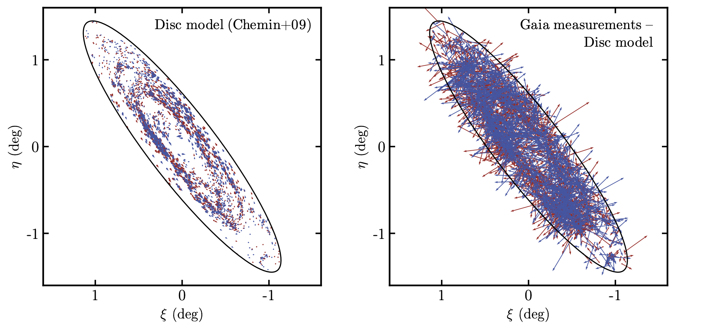

Abstract
Understanding the proper motion of the Andromeda galaxy with respect to our Milky Way motion is essential for accurately determining their masses, comprehending their histories, and predicting their future. However, this task is made difficult by the vast galactic distances separating them. Previous studies using proper motion data from the Gaia mission have led to inconsistencies, the origins of which remain unclear. By refining the motion of the quasar reference frame and statistically accounting for the variations in Andromeda's inferred motions across different regions, I demonstrate that these inconsistencies most likely arise from systematic uncertainties. These uncertainties should be significantly reduced with the release of Gaia DR4.
Context
The first useful measurement of M31's proper motion was made in 2008 by van der Marel & Guhathakurta ADS (green dot). They assumed that the satellites were dynamically bound to M31 and used their radial velocity measurements to constrain Andromeda's motion. The first direct measurement followed in 2012 by Sohn et al. ADS , who used three HST deep field images (3.37' by 3.37') observed at two different epochs (yellow dot). While these field measurements are highly accurate, the small size of the fields means the results could be model-dependent. In 2019, Gaia DR2 data enabled van der Marel et al. ADS to address this size issue and make an estimate using stars from the entire galaxy, albeit with reduced accuracy (black dot). Finally, in 2021, Salomon et al. ADS inferred M31's motion using Gaia EDR3 on a sample of blue and red stars (in a daring way represented in blue and red, respectively). As far as we know, there is no reason to believe that M31 is being stretched or disrupted by unknown forces that would cause blue and red stars to behave differently. Thus, the question I sought to answer is: why do we observe these inconsistencies?
Note: all results are presented in a heliocentric reference frame with the proper motions along the right ascension (x) and declination direction (y). The black pentagon represents a strictly radial motion of M31 towards the Milky Way.
Star and quasar samples
I have recovered the blue and red disc star samples from Salomon et al. (2021) ADS by applying to the Gaia DR3 data a series of spatial, colour-magnitude, and proper motion cuts as detailed in their article. The spatial distribution and the corresponding colour-magnitude diagram (CMD) of the remaining stars are shown in the middle and right-hand panels of the figure below, respectively. The stars within the hashed region can be considered contaminants. The left-hand panel displays the distribution of quasars used to establish the Gaia celestial reference frame (CRF), shown both before (grey dots) and after (black dots) incorporating additional quasars from the latest Gaia catalogue of extragalactic objects ( Gaia Collaboration et al. 2023a ADS ). The newly added quasars significantly increase the central density, which was previously low due to the CRF being constructed from different catalogues, not all of which being equally reliable in heavily contaminated regions such as M31.
Inference method
The global motion of the galaxy is inferred by assuming it is the sum of two probabilistic models: one representing the true population of M31 stars and the other representing contamination, both modelled as two-dimensional Gaussians. More details on the method are provided in Rusterucci et al. (in prep.). The intrinsic motion of the stars within M31 is accounted for using a disc model (left-hand panel of the figure below), which we subtract from the measured Gaia proper motions (right-hand panel of the same figure). In the case of quasars, no disc model is needed, as they are considered motionless.
Correction for the motion of the reference
The quasars from the Gaia reference frame exhibit small systematic motions on the order of a few tenths of microarcseconds per year (see Figure 13 from Lindegren et al. 2021b ADS ). To address this, I created a grid covering M31 and its outskirts, with bins of sizes 72" by 72". The motion of all quasars within a 2.5deg radius around each bin centre is then inferred and smoothed using a Gaussian kernel with a standard deviation of 5 pixels, resulting in the correction maps presented below along the right ascension and declination directions. While being aware of the correlations introduced by this method, I chose to use it for simpler and more interpretable results. The top row shows the correction maps using the Gaia DR3, while the bottom row shows the maps using the DR2. It is clear that the DR3 represents a significant improvement over the DR2, as the latter maps are not centred on 0 and exhibit a wider range of values.
Quadrant analysis
Instead of inferring the motion of all the blue and red stars together, we infer the motion for stars in four different quadrants, effectively reducing our sample size by a factor of four. The motivation for this approach comes from the similarity of our results to previous ones, even after applying the correction maps as zero-point offsets as previously discussed. The left-hand panel of the following figure shows the inferred motion for each quadrant (in low opacity) along with the final combined measurement (in clear) for both the blue and red samples. Assuming the four quadrants are independent (though this is not entirely the case due to correlations introduced by the correction maps), we can statistically infer the mean motion, along with the statistical and systematic uncertainties for each quadrant. The statistical uncertainties, which arise from the "noise" in the data, are represented as solid error bars in the figure below. The systematic uncertainties are shown as dashed error bars and can be interpreted as the uncertainties required to make the results compatible with one another. The right-hand panel displays these new DR3-based results in the context of previous studies. Due to the newly determined larger systematic uncertainties, the blue and red samples are now compatible with each other.
What can we conclude?
Re-doing the entire analysis using Gaia DR2 data, we observe even greater incompatibilities between the quadrants, as shown in the following figure (low opacity). The final results differ significantly and are only made compatible due to the large, dominant systematic uncertainties. This suggests that previous studies may have underestimated the magnitude of these systematic effects, and highlights that we aim to infer motions that approach Gaia's current capabilities. Nonetheless, the substantial improvement between the two data releases is reassuring. If a similar improvement is observed between the DR3 and the DR4, we could achieve measurement uncertainties comparable to those of the HST, but on a sample that fully covers M31.

Reference
van der Marel, R. P. & Guhathakurta, P. 2008, ApJ, 678, 187
van der Marel, R. P., Fardal, M., Besla, G., et al. 2012, ApJ, 753, 8
Sohn, S. T., Anderson, J., & van der Marel, R. P. 2012, ApJ, 753, 7
van der Marel, R. P., Fardal, M. A., Sohn, S. T., et al. 2019, ApJ, 872, 24
Salomon, J. B., Ibata, R., Reylé, C., et al. 2021, MNRAS, 507, 2592
Lindegren, L., Klioner, S. A., Hernández, J., et al. 2021b, A&A, 649, A2
Gaia Collaboration, Bailer-Jones, C. A. L., Teyssier, D., et al. 2023a, A&A, 674, 426 A41